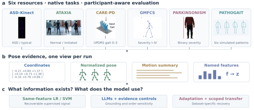
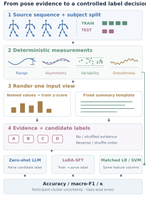

Signal availability
Matched logistic regression and a linear SVM probe recoverable supervised signal.
A multi-condition benchmark for evaluating whether large language models use pose-derived gait evidence.
The same motion measurements can carry a learnable label signal and still be difficult for an off-the-shelf language model to use. GaitEval separates those questions.
Camera-ready preparation snapshot. Author metadata and outstanding reproducibility items are documented in the repository.
Each dataset keeps its native task. Patient cohorts, imitated gait, and simulated gait are described separately; none is treated as an interchangeable clinical diagnosis.

Derive interpretable measurements from valid pose frames. Render one evidence view, redact answer-revealing metadata, and compare LLM predictions with linear classifiers using the same feature columns.
Matched logistic regression and a linear SVM probe recoverable supervised signal.
No-evidence, shuffled-evidence, and candidate-order controls test sensitivity to the supplied information.
Dataset-specific LoRA tests in-distribution recovery. Additional few-shot and transfer probes retain their measured scope.
Four input-view families; z-scoring is a scaling control within named features. The shared six-dataset matrix uses summaries and z-features.

Explore the common Qwen2.5-7B protocol. LLM scores below are fixed-label-set macro-F1 recomputed from released predictions; LR/SVM values are the committed matched references.
Deterministically selected success/failure examples. Exact pose/input records are unavailable; these outputs are not presented as a complete reasoning trace.
| Dataset | Summary ZS | Z-feature ZS | Summary SFT | LR | SVM |
|---|
ATAXIA has four test participants and eight clips; PARKINSONISM has five participants; PATHOGAIT has two. These fixed-split point estimates do not establish clinical validity or population-level superiority.
A curated repository contains genuine predictions, fixed label contracts, scoring, parsing checks, plots, and model runner configurations. It is separate from the editing workspace.
Open the repository ↗python3 -m pip install -r requirements-analysis.txt
bash scripts/reproduce.shThe CPU path regenerates recorded LLM point metrics and confusion figures. Source poses, full input layers, adapters, and training logs are not bundled. End-to-end training/inference reproduction requires those external assets.
Reproducibility scope ↗LLM grounding in pose-derived gait evidence is heterogeneous and representation-dependent. Adaptation can recover dataset-specific mappings in distribution; reliability beyond the tested settings remains unresolved.